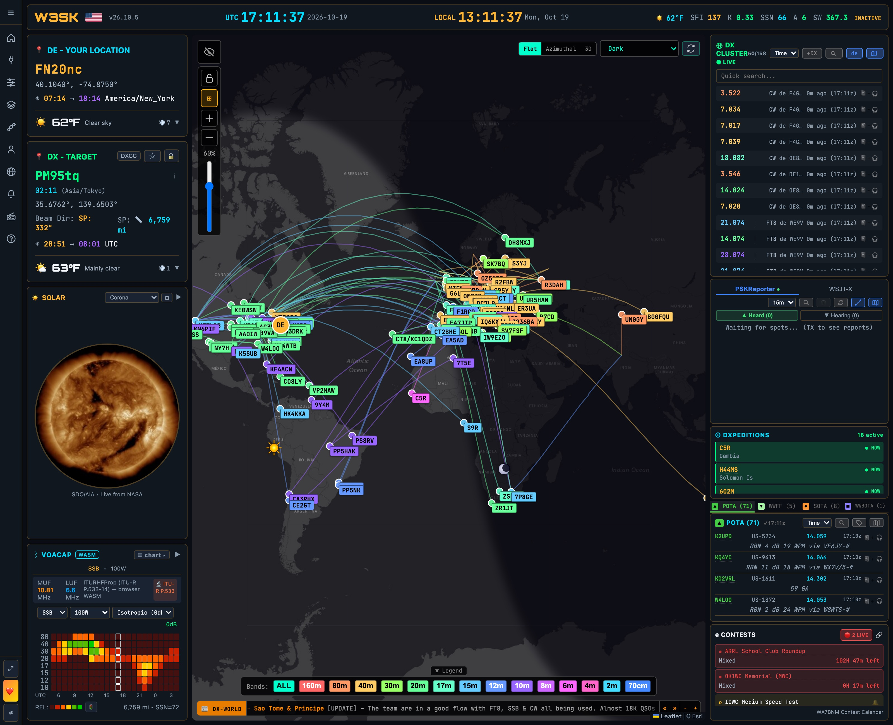
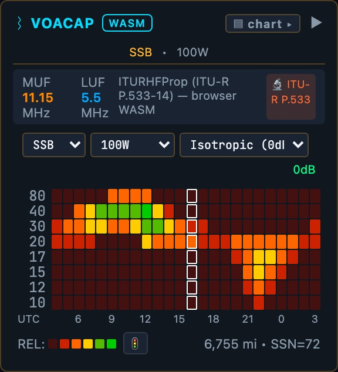

A free, open-source dashboard in your web browser that puts what's happening on the air on one screen: space weather, live spots, propagation for your location, parks and summits, DXpeditions and contests. openhamclock.com · no account, no download, no ads.
Settings are saved in your browser, on that device. To install it like an app: iPhone Safari Share → Add to Home Screen; Android Chrome ⋮ → Install app; Chrome/Edge on a computer, the install icon in the address bar.
Left side = conditions. Right side = activity. Middle = where it all is.

UTC is the time used by every log, spot, contest and DXpedition (EDT = UTC−4; EST = UTC−5). Click LOCAL to switch 12/24 hour. Click your callsign for Settings, the version for what's new.
| What it is | How to read it (app colors) | |
|---|---|---|
| SFI | Solar Flux Index: the sun's radio output at 10.7 cm; a stand-in for how hard it's ionizing the upper atmosphere | Higher is better, especially 15–10 m. ~70 quiet sun · 120+ good · 150+ excellent |
| K | Planetary K-index: geomagnetic disturbance, 0–9, over 3 hours | Low is better. 0–2 quiet. 4+ shows red: absorption, noise, aurora |
| SSN | Sunspot number | Rises and falls with SFI over the 11-year cycle |
| A | A-index: the whole day's geomagnetic disturbance in one number | <10 green · 10–19 amber · 20+ red |
| SW | Solar wind speed, km/s | <500 green · 500–699 amber · 700+ red. Fast wind stirs up the field |
| Word | Geomagnetic field summary from N0NBH (HamQSL) | QUIET green · ACTIVE or any STORM red · anything else amber |
Bands die at midday? Check X-ray before you check the coax.
Chart view: a prediction for the path from your DE to your DX. Rows = bands, columns = 24 hours (UTC); the white box is now. Green = likely, yellow/orange = possible, red/dark = unlikely. It uses the ITU's HF model (ITU-R P.533, the physics behind VOACAP), calculated in your browser with your mode, power and antenna (default SSB, 100 W).
Example (FN20 → Tokyo, SSB, Oct 19): 40/30 m best ~08–14 UTC (our night); 17/15 m window ~21–00 UTC (5–8 PM EDT).

Bars view: the same prediction for this hour, best band first.
Bands view: N0NBH's general GOOD / FAIR / POOR per band, day and night, plus VHF (aurora, sporadic-E) and noise.
A spot is a report that a station was heard on a frequency, from other hams or from automatic receivers (the Reverse Beacon Network, RBN), shared over the worldwide DX cluster network.
Row: frequency (colored by band) · callsign · mode · de spotter · age.
Digital-mode software (WSJT-X, JTDX…) reports every station it decodes to PSKReporter.info.
Station call, grid, units · Display layout, theme, text size · Map Layers MUF map, aurora, radar, grid squares · Satellites · Alerts sounds/notifications · Profiles save & share setups · Integrations logbooks, QRZ · Help the full manual
Ctrl+K (⌘K on Mac): type what you want, e.g. "aurora", "classic".
Other layouts: Classic, Dockable (80+ panes), Contest, EmComm and more.